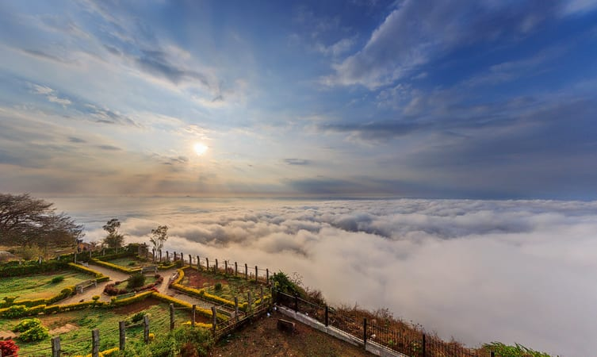
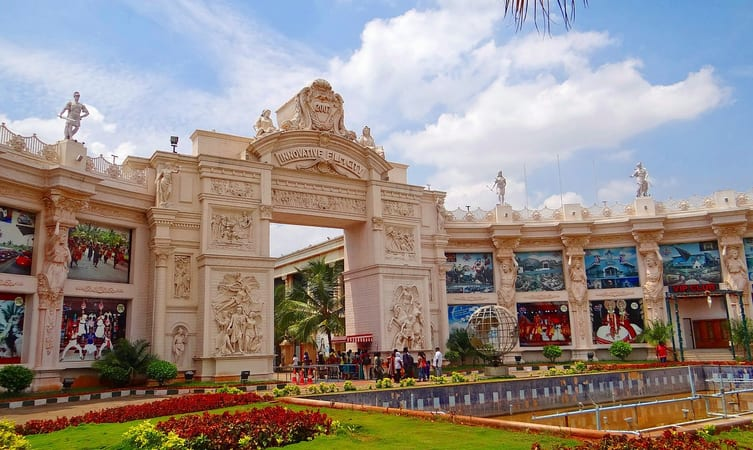
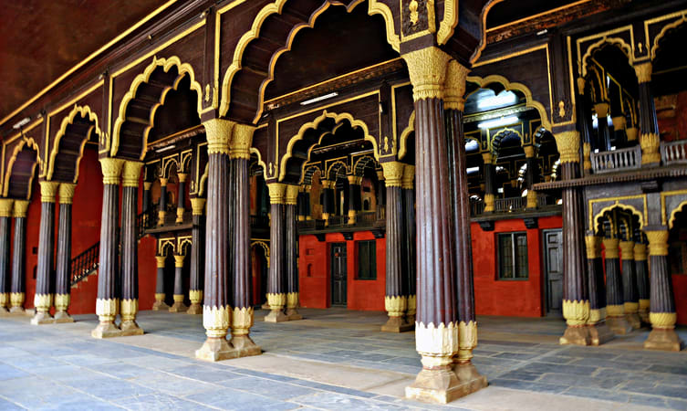
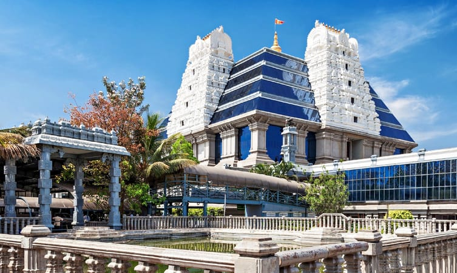
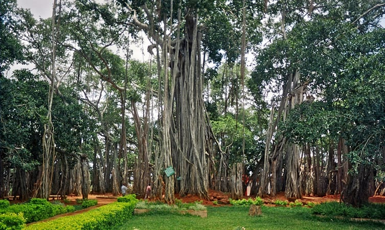
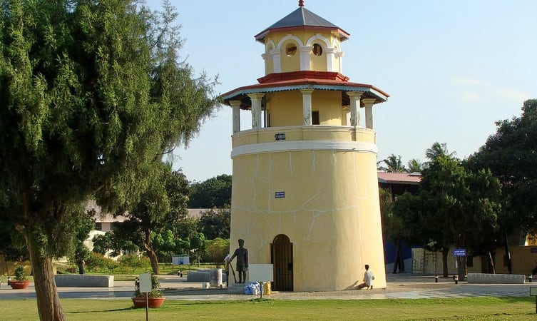
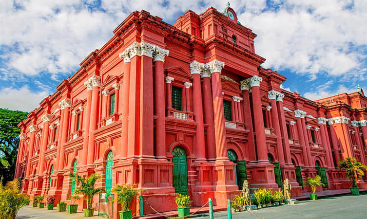

The Lalbagh Botanical Garden, Bangalore is of royal origin and was begun at first as a private garden in a region of 40 sections of land by Hyder Ali, most famous rulers amongst the most well known leaders of old Mysore in 1760. At first planned in Mughal style, on the model of a broad garden at Sira in Tumkur close Bangalore, this garden was additionally created by Hyder Ali's child Tipu Sultan and hence by the British and Indian doyens of horticulture by an expansion of...

At the intersection of MG road and Residency road lies Brigade road which is considered a shopping paradise for the city dwellers. There is a long stretch of standalone shops, individual retailers, and outlet selling almost everything you need making it one the best Bangalore sightseeing. This commercial hubs houses myriads of global brand outlets as well and it has been a hub for celebrating New Year in the almost every year. The place has ample parking space and uncountable branded and non-branded outlets.

Bangalore Palace is a true example of sheer architectural beauty which was built in 1873. This old opulent structure sits on a land of 25000 square feet displaying the regal mix of Tudor and Scottish Gothic architectural designs and also one the best places to see in bangalore. Besides being a preserved site, it is also a grand venue that hosts marriage parties, events, and rock concerts. The palace houses paintings of the famous painter of bygone era.

Take a day out and get charged at this craziest amusement park in Bangalore. Wonderla is one of the largest amusement parks in the entire country with more than 60 exhilarating rides such as Hurricane, Equinox, Insanity Twister, Recoil, Dropzone, Flash Tower, Mixer, Y-scream, Maverick etc. These high-tech rides will swirl, twist and turn you in around

Vidhana Soudha is situated in the center of the city, painted in white and spread over an area of 60 acres. Vidhan Soudha is the best places to see in bangalore which houses the state secretariat and state legislature under one roof. This dome-like structure has two chambers where the first floor (central wing) can accommodate 268 members at a

This is a set of breathtaking hillocks which is a complete nature retreat. From cycling and paragliding into the stunning mount to the Yoganandeeshwara Temple that sits atop the hill with a huge Nandi statue, these small mounds have a lot to offer, even the name of the hills was coined after the temple statue.

This opulent marvel is situated off Bangalore -Mysore highway at Bidadi and is loaded with activities such as net cricket, kids boating, Go-karting, bull ride etc. There are around three refreshing water pools one of which is a wave pool. It is thronged with interesting activities and attractions such as Dino Park, Mirror Maze, Haunted Mansion, Tribal Museum, Kabali Walkthrough, Fossil Museum coupled with Catapult, bow, and arrow etc.

This summer residence of Tipu Sultan was built in the year 1791. The ceilings and walls of the palace have a floral touch with Islamic carvings and decorations. The uniqueness of this two storey building is that it is entirely made of teak wood with wooden pillars supporting the foundation of the palace. It is said that Sultan used the eastern and western balconies to conduct the mass and state affairs.

Iskcon temple is one chain of temples which are religiously famous and very prestigious chain of temples. It is situated in Rajajinagar in North Bangalore dedicated to Radha and Krishna catering to devotees from all over the world. The Iskcon temple in Bangalore is one of the largest Iskcon temples in the world which was established in 1997. The temple is situated on a hillock named Hare Krishna hill and has a very enticing view of the surrounding. The temple is a part of a charitable society that aims at spreading the consciousness of Radha Krishna among its devotees. It also organizes engaging events like religious concerts and gatherings to talk about the life and preachings of Lord Krishna. For a peaceful escape and meditation sessions, one must head to Iskcon in Bangalore.

The sprawling branches of a Banyan tree has captured a land of over 3 acres in Kethohalli village, making it one of the unique s ightseeing places in Bangalore. This 400-year-old Banyan tree is stated to be the second largest tree in the country and the first largest in Karnataka. A thousand aerial roots hanging out from this tree covers a circumference of over 250 meters. Dodda Alada Mara is a well-maintained and well-kept secret of Karnataka which is properly fenced and protected with cemented seats placed beside it for the visitors to enjoy the magic of nature.

This enormous art gallery is segmented into two halls where it exhibits more than 600 paintings. One of the two halls displays stone sculptures associated with Khajarao School of Art and Mathura whereas the other hall exhibits pottery and clay articles dating back to the Indus Valley civilization. This art gallery houses the artwork and paintings of world famous and renowned artists such as K. Venkatappa, M. F. Hussain, Hanumaiah, Hariram, Yusuf Arakkal, Rekha Rao, N. S. Bendre, and Vasudev in galore on the first level of the building.

This enormous art gallery is segmented into two halls where it exhibits more than 600 paintings. One of the two halls displays stone sculptures associated with Khajarao School of Art and Mathura whereas the other hall exhibits pottery and clay articles dating back to the Indus Valley civilization. This art gallery houses the artwork and paintings of world famous and renowned artists such as K. Venkatappa, M. F. Hussain, Hanumaiah, Hariram, Yusuf Arakkal, Rekha Rao, N. S. Bendre, and Vasudev in galore on the first level of the building.

Jawaharlal Nehru Planetarium was established in 1989 and is situated opposite to Indira Gandhi Musical Fountain Park on the Sir. T. Chowdiah Road in Bangalore. Shows such as Dawn of the Space Age, Mars-The Red Planet and Our Solar System etc run daily in Kannada and English language. The outdoor science park lays out many interesting science models such as a giant Kaleidoscope, Whispering Dishes, Resonant Swings, D.N.A and Sun Dial etc along with various science exhibitions, lectures, workshops, and science theatre shows to accentuate the interest of students in research and studies and encourage quality education.

Initially, it was constructed as a mud fort in the year 1537 by Kempe Gowda and then was rebuilt by Hyder Ali into a fascinating stone structure standing that still does not fail to mesmerize the spectators. The rampant and the remnants of the fort can be witnessed in the K. R market area. As a large portion of the fort vanishes today, the Tipu Sultan’s summer palace was a part of the fort which now looks as a separate entity. Kempe Gowda also made a temple dedicated to his daughter in Koramangala for her act of self-sacrifice to benefit the construction of the fort. As the southern gate of the fort would fall every time it was built so someone suggested a human sacrifice, Gowda did not agree to this act but his daughter self-sacrificed herself.

Visvesvaraya Industrial and Technological Museum is one of the interesting Bangalore tourist attractions which have a lucid way of making you understand various concepts of engineering. Displaying various scientific experiments and models under one roof, Visvesvaraya Industrial and Technological Museum is one resourceful building that sprawls over an area of 43,000 sq ft amid the lush greenery of Cubbon Park. The place is utterly engaging for both children and adults who once enter the building get engrossed various age-old fossils, mechanical gadgets, and gears, information on space with space models, satellite, electrical, biotech and chemistry models etc.